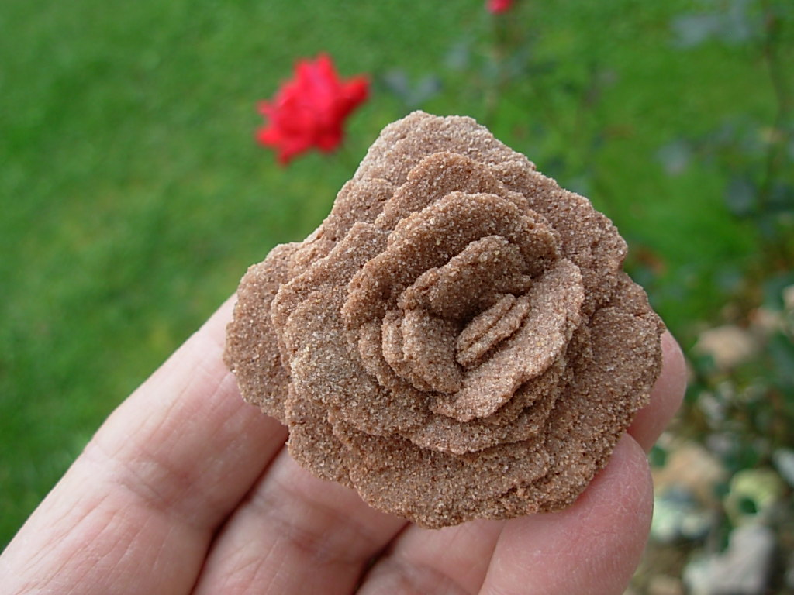

New here?

New to rockhounding and don't know where to start? Not to worry, we will show you the ropes. Click below to head over to our "Getting Started" guide
Getting StartedRocks & Minerals In Oklahoma


Oklahoma has some amazing rockhounding to offer, boasting a diverse array of minerals, crystals, and fossils waiting to be discovered. From the Wichita Mountains to the Ouachita Mountains, you can find treasures such as galena, selenite, barite, and even dinosaur fossils. The state's rich geological history and unique landscapes make it an ideal destination for rockhounds of all skill levels.
Sponsored Dig Site

Own a digsite you would like to advertize in Oklahoma? Contact us for more information about being our sponsor of the month! Email sponsors@rockhounding.org for more information.
Dig With UsPopular Rocks In Oklahoma
-

Rose Rock
Barite rose, or rose rock, is the state rock of Oklahoma. These unique formations resemble blooming roses and can be found in central Oklahoma, especially around Noble.
Read More -
Hourglass Selenite
Hourglass selenite, a type of gypsum crystal, is known for its unique hourglass-shaped inclusions. It can be found in the Great Salt Plains in Oklahoma.
Read More -
 Trilobite Fossils
Trilobite FossilsTrilobite fossils are remnants of ancient marine arthropods. They can be found in Oklahoma's limestone deposits, particularly in the Arbuckle Mountains region.
Read More -
 Galena
GalenaGalena, a lead sulfide mineral, is known for its metallic luster and cubic crystal formations. It can be found in the Tri-State Mining District in northeastern Oklahoma.
Read More -
 Sphalerite
SphaleriteSphalerite, a zinc sulfide mineral, is found in the Tri-State Mining District. It is known for its dark, shiny appearance and interesting crystal forms.
Read More -
 Calcite
CalciteCalcite is a common and versatile mineral found in many geological environments. In Oklahoma, it can be found in a variety of colors and crystal shapes, particularly in limestone and dolomite formations.
Read More -
 Dolomite
DolomiteDolomite, a carbonate mineral, can be found in Oklahoma's limestone formations. It often displays a pearly luster and can form beautiful crystals.
Read More -
 Fluorite
FluoriteFluorite is a colorful mineral known for its cubic crystals and vibrant colors. It can be found in the southeastern part of Oklahoma, particularly in the Arbuckle Mountains.
Read More -
 Ammonite Fossils
Ammonite FossilsAmmonite fossils, remains of ancient mollusks, can be found in limestone and shale deposits in Oklahoma. These spiral-shaped fossils are popular among collectors.
Read More -
 Quartz
QuartzQuartz is a common mineral found in various geological environments. In Oklahoma, it can be found in the Ouachita and Arbuckle Mountains, forming beautiful crystals in various colors.
Read More
Popular Areas In Oklahoma
-
 Salt Plains National Wildlife Refuge
Salt Plains National Wildlife RefugeAt Salt Plains National Wildlife Refuge, visitors can search for unique hourglass-shaped selenite crystals in the salt flats.
Read More -
 Great Salt Plains State Park
Great Salt Plains State ParkGreat Salt Plains State Park is another location where selenite crystals can be found, as well as a variety of bird species and other wildlife.
Read More -
 Black Mesa Nature Preserve
Black Mesa Nature PreserveBlack Mesa Nature Preserve is home to Oklahoma's highest point and offers opportunities to find petrified wood and various fossils.
Read More -
 Arbuckle Mountains
Arbuckle MountainsThe Arbuckle Mountains in southern Oklahoma are known for their geological diversity, with opportunities to find fluorite, quartz, and other minerals.
Read More -
 Ouachita Mountains
Ouachita MountainsThe Ouachita Mountains, located in southeastern Oklahoma, offer opportunities for rockhounding, including quartz and other minerals.
Read More -
 Ada Gem, Mineral and Fossil Club
Ada Gem, Mineral and Fossil ClubThe Ada Gem, Mineral and Fossil Club organizes field trips and events for rockhounding enthusiasts in Oklahoma, offering a great way to explore new locations.
Read More
Geology of Oklahoma
Oklahoma's diverse geology dates back to the Precambrian Era, over 1 billion years ago, when ancient granite and other igneous rocks formed the core of the state. Later, during the Paleozoic Era, Oklahoma was submerged under a shallow sea, leading to the deposition of limestone, sandstone, and shale layers.
Throughout the Mesozoic Era, Oklahoma was part of the Western Interior Seaway, which resulted in the formation of additional sedimentary layers. During this time, dinosaurs roamed the land, leaving behind numerous fossils. The Cretaceous Period saw the emergence of the Ouachita and Arbuckle Mountains as a result of tectonic forces.
During the Cenozoic Era, the state experienced periods of uplift, erosion, and sedimentation, which shaped its present-day landscape. The Panhandle region of Oklahoma is known for its Ogallala Formation, an important aquifer that was formed from sediments deposited by ancient rivers.
Today, Oklahoma's geology provides a wealth of rockhounding opportunities, with its diverse mineral resources, including gypsum, limestone, sandstone, granite, and various ores. The state's geological history is also evident in its unique landforms, such as the Wichita Mountains and the Glass Mountains.